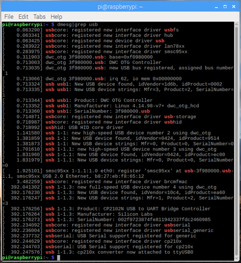
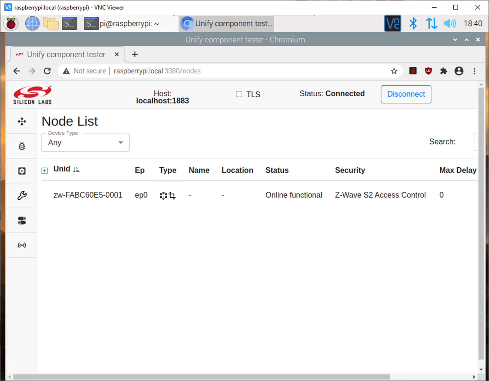

Z-Wave (ZPC)
Introduction
Here we explain how to get up and running quickly to test out Unify on the Raspberry Pi reference platform for Z-Wave devices.
Prerequisites
An USB Z-Wave dongle (eg: UZB7 )
Unify installed on Raspberry Pi (as described here)
Connect UZB7
Connect the Z-Wave device to the USB port of the Raspberry Pi and type
pi@raspberrypi:~ $ dmesg|grep usb
Make a note of the tty device 
Configure ZPC
To configure ZPC type the following at a terminal
pi@raspberrypi:~ $ sudo dpkg-reconfigure uic-zpc
Enter the tty device from the previous step and select the correct region
Run Unify
To have Unify start at boot
pi@raspberrypi:~ $ sudo systemctl enable uic-zpc
To run Unify one time
pi@raspberrypi:~ $ sudo systemctl start uic-zpc
Using zpc shell
ZPC daemon is running in background, so clients can connect to it.
For learning purpose, you can try to log in the gateway and try the zpc to understand how it works.
Stop the background service, to run zpc as frontground:
sudo systemctl stop uic-zpc.service
sudo zpc # TODO check id
From ZPC CLI commands can be typed:
ZPC>help
==================================================
Unify Command line interface Help:
(...)
help :Prints help
(...)
zwave_add_node :Add a Z-Wave node to the network
(...)
zwave_home_id Print Z-Wave Home ID
(...)
exit :Exit the application
(...)
Let’s try to control a z-wave switch device (added as node 2) turn if off (0x00) and on (0xff):
ZPC> zwave_home_id
ZPC> zwave_add_node
ZPC> zwave_tx 2,250100
ZPC> zwave_tx 2,2501ff
TODO (add output)
For the record 2501 prefix is matching the Z-Wave command class / command pair:
grep BINARY ./applications/zpc/components/zwave_command_classes/assets/ZWave_custom_cmd_classes.xml
(...)
<cmd_class key="0x25" version="1" name="COMMAND_CLASS_SWITCH_BINARY" help="Command Class Binary Switch">
(...)
<cmd key="0x01" name="SWITCH_BINARY_SET" help="Switch Binary Set" support_mode="RX">
(...)
This is the lowest level to interact with Z-Wave nodes using Z-Wave application layer.
Using Unify Attribute store
Unify provides a generic way to deal with nodes. Once the Z-Wave network is build (using zwave_add_node), Nodes are also registed in a generic tree. It can be displayed using:
TODO add node ID
ZPC> attribute_store_log
# │ │ │ │───(134) Binary Switch Command Class version ................. 2 (<>)
# │ │ │ │───(160) ZCL OnOff OnOff ..................................... 0 (<>)
The leafs in tree are attributes that can be read or changed.
ZPC> attribute_store_log_search OnOff
# │ │ │ │───(72) ZCL OnOff OnOff ...................................... 0 (<>)
# TODO adjust tree
To change the OnOff Value attribute (82) to On Value (255):
ZPC> attribute_store_set_desired 82,0
# <d> [attribute_store] ID: 67 - Binary Switch State - Reported (hex): [00 00 00 00] (Desired (hex): [00 00 00 00])
ZPC> attribute_store_log_search Value
# │ │ │ │ │───(82) Value ............................................ 0
Using MQTT Client
Assuming and MQTT broker is running on the gateway, any MQTT client should be able to deal with attribute store using Unify API.
sudo apt install mosquitto mosquitto-clients
Active topics can be logged using:
$ mosquitto_sub -t 'ucl/#' --verbose
# ucl/by-unid/zw-D0C57CD4-0002/ep0/OnOff/Commands/Toggle {}
# ucl/by-unid/zw-D0C57CD4-0002/ep0/OnOff/Attributes/OnOff/Desired {"value":false}
To change an attribute using a MQTT publish message on command topic related to OnOff Command of Z-Wave device (zw-D0C57CD4-0002, 2d node in homeid) :
mosquitto_pub -t "ucl/by-unid/zw-D0C57CD4-0002/ep0/OnOff/Commands/Toggle" -m "{}"
The change should also appear on the subscriber feed
# ucl/by-unid/zw-D0C57CD4-0002/ep0/OnOff/Attributes/OnOff/Desired {"value":true}
# ucl/by-unid/zw-D0C57CD4-0002/ep0/OnOff/Attributes/OnOff/Reported {"value":true}
Using Unify GUI
The previous MQTT API can be also controlled using Unify Web Application known as uic-dev-ui (it is generic and not part of z-wave-protocol-controller project)
Download pacakge from:
https://github.com/SiliconLabs/UnifySDK_test/tags
Check video demo
https://github.com/Z-Wave-Alliance/z-wave-stack/wiki/ZPC
Launch a web browser and connect to http://raspberrypi.local:3080
In the top right of the UI enter “localhost” and port 1883, then click “Connect” 
OTA
TODO: explain more
Download image-provider package,
Place gbl files at expected location
Update index.json file accordingly
Reset the system
If needed, developer might be tempted to reset the system using the following commands:
sudo systemctl stop uic-zpc
sudo systemctl stop uic-dev-gui-api.service
sudo systemctl stop uic-dev-gui-client.service
sudo service mosquitto stop
sudo rm /var/lib/mosquitto/mosquitto.db
# && sudo rm /var/lib/uic/*.db # && sudo service mosquitto start && sudo service uic-nal start
sudo service mosquitto restart
sudo rm /var/lib/uic/zpc.db
sudo find /var/lib/uic/
sudo systemctl restart uic-zpc
Important: Make sure to also reset the controller, if you remove db and rely on controller, the interview could create unexpected results
More
Note: For reference documentation please refer to related chapter of Z-Wave-Protocol-Controller documentation